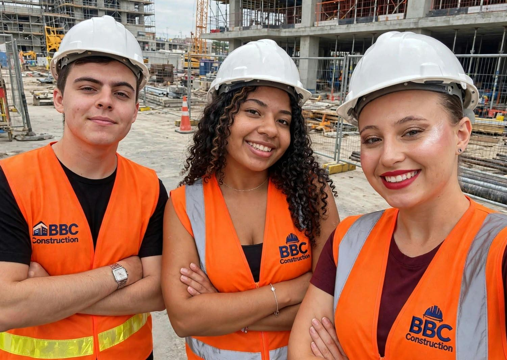

BBD Construction

BBC Construction is an architecture and construction company founded in 2026 by Beatriz Belarmino, Pedro Dalben, and Ana Bonaldo—students of the Building Construction Technical Program at the Escola Polivalente de Americana. The name BBC represents the founders' initials as well as our three pillars: Well-being, Beauty, and Concrete. We started in the classroom and brought our knowledge to the construction site. We take a hands-on approach to every stage of construction, prioritizing quality, organization, and safety. We operate with transparency, responsibility, and commitment, always striving to offer our clients high-quality, accessible solutions. Our goal is to transform designs into functional, beautiful, and safe spaces, making the construction process smoother and more reliable.
